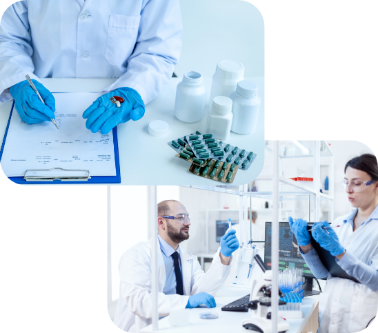
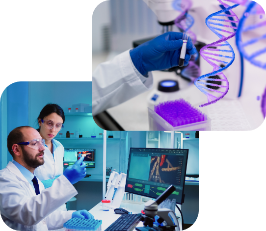
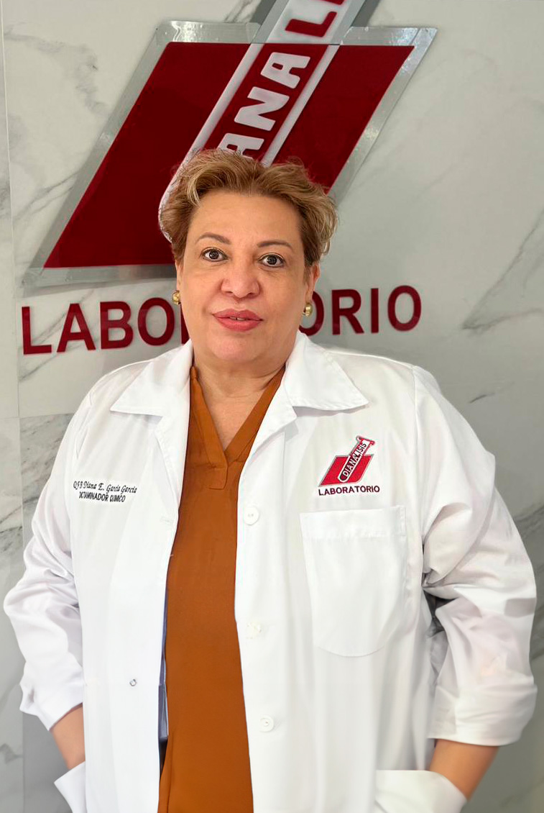

Peritajes de Alimentos
Contamos con laboratorio de análisis microbiológicos y fisicoquímicos de aguas y alimentos para identificación
Microbiológicos
Fisicoquímicos
Microorganismo

Peritajes Químicos
Nos especializamos en peritajes químicos de
Sustancias
Químicas
Hidrocarburos
Polimeros

Peritajes de Quimico Forense
Nuestro Registro en Química forense nos da la facultad de elaborar peritajes en
Sangre
Saliva
Huesos
+30 Años de Experiencia
Nosotros
Somos una empresa Mexicana que brinda excelencia en soluciones de:
- Consultoría Química
- Laboratorio de Análisis Quimicos
- Toxicológicos
- Farmacológicos
- Siniestros
- Servicios Periciales y Dictámenes Quimicos
- Química forense
- MIA / Manifiestos de Impacto ambiental
- Emisiones contaminantes
- ADN
- Alimentos
- Sustancias químicas
Servicios

Peritajes en Toxicología, Famacología y Química Forense
Nuestro registro de Perito en Farmacología nos da la facultad de emitir Peritajes y Dictamentes en:
Peritajes de ADN
Contamos con Registro como Perito en pruebas de ADN requerido en procesos jurídicos para reconocimiento o desconocimiento de:

Peritajes Químicos
Nos especializamos en peritajes químicos de substancias quimicas...
Ver másPeritajes de Alimentos
Contamos con laboratorio de análisis microbiológicos y...
Ver másPeritajes de Siniestros
Efectuamos Peritajes de Siniestros a corporativos de Seguros como GNP...
Ver másServicios a Empresas de Seguridad Privada
Contamos con la aplicación de pruebas toxicológicas anexando un...
Ver másPeritajes de Toxicologia
Contamos con Registro como Perito en Toxicologia y nuestro Laboratorio...
Ver másPeritajes de Química Forense
Nuestro Registro en Química forense nos da la facultad de elaborar...
Ver másPeritaje en Delitos Sexuales
Contamos con el servicio de identificacion de ADN en iquidos corporales...
Ver másAnalisis de Medio Ambiente
Elaboración de MIA de manifiestos...
Ver másDirectorio Profesional

QFB. Diana García García